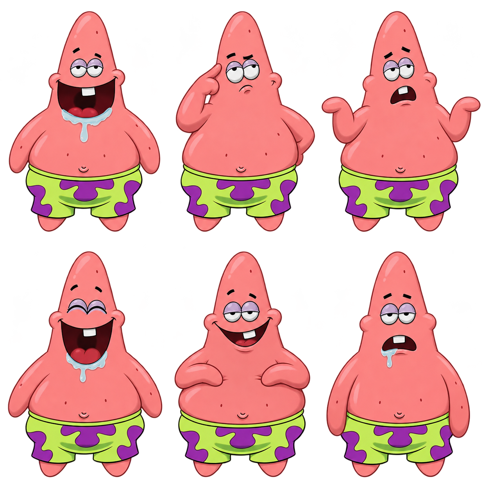

Requested illustration pending. This is a spelling and layout proof only. The letters below are ordinary type; they do not depict the requested backside. Keep the current application wordmark.
Final reading order: C H U D D Y. The illustrated component must replace exactly dd, with chu on its left and y on its right. The u must remain visible.

The original sheet is displayed through a viewport showing its neutral cell. Its source bytes are unchanged. Pink starfish, broad proportions, sleepy expression, drool, green shorts and purple flowers provide the established appearance reference.
This pose faces forward. It cannot supply the requested looking-back pose or the illustrated dd. No character redraw, image generation or rear-pose reconstruction was performed.
Review the full brief in docs/LOGO.md and the machine-readable pending state in manifest.json. This page has no scripts, external resources, sound, recording or application controls.